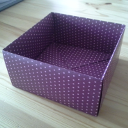

September 2021
DigiSparkBlinkStick III
30.09.2021

Ich habe vor kurzem darüber berichtet, wie ich meinen eigenen BlinkStick für eine Steuerung über MQTT fitgemacht habe. Nun habe ich einen weiteren BRanch zum Projekt hinzugefügt, mit dem man nicht mehr nur einzelne NeoPixels ansteuern kann
Collatz-Vermutung II
29.09.2021

Nachdem ich kürzlich bereits über meinen Zeitvertreib mit der Collatz-Vermutung berichtet habe folgen hier nun einige Details meiner Implementierung
The Things (Network) Stack v3
19.09.2021
Ich berichtete vor einiger Zeit über meine ersten Versuche der Beschäftigung mit LoRaWAN und The Things Netzwork.
The Future of Programming 2013 (1973?)
17.09.2021

Bret Victor liefert hier einen Vortrag mit Polylux und nimmt die Zuhörer auf eine Zeitreise in die Vergangenheit mit...
Die sozialen Medien des Web 1.0
15.09.2021

Na gut - das hier ist nicht wirklich und strenggenommen ein Linux-Thema. Es betrifft schon im eigentlichen Sinne alle Unixe und BSDs und was da noch so kreucht und fleucht und heutzutage kann man sogar einen Finger-Client für Windows selber bauen und Gopher-Browser gibts inzwischen auch für Windows...
Literatur zur beweisfesten Langzeitarchivierung
15.09.2021

Hier eine kleine Zusammenfassung von Ressourcen zum Thema...
Isometrische Darstellung für generierte Landschaften
07.09.2021

Inspiriert durch einen Fund im Internet habe ich versucht, meinen Landschaftsgenerator um einen weiteren Renderer zu ergänzen.
Fraktale auf der Kommandozeile
07.09.2021

Nachdem ich LuFi in meinen Docker-Zoo integriert hatte, habe ich mich noch ein wenig auf der Gitlab-Instanz umgesehen, auf der das zugehörige Repository gehostet ist und fand ein weiteres interessantes Projekt, das mich wieder einmal in einen Kaninchenbau gestürzt hat...
Schachtel und Deckel 2
07.09.2021

Und wieder eine Schachtel - diesmal in verschiedenen Größen und mit verschiedenen Deckeln - ohne Schere, ohne Leim...


Tags
August 2022 Juli 2022 Juni 2022 Mai 2022 April 2022 März 2022 Februar 2022 Januar 2022 Dezember 2021 November 2021 Oktober 2021 September 2021 August 2021 Juli 2021 Juni 2021 Mai 2021 April 2021 März 2021 Februar 2021 Januar 2021 Dezember 2020 November 2020 Oktober 2020 September 2020 bis zum August 2020 Upcoming...
Manche nennen es Blog, manche Web-Seite - ich schreibe hier hin und wieder über meine Erlebnisse, Rückschläge und Erleuchtungen bei meinen Hobbies.
Wer daran teilhaben und eventuell sogar davon profitieren möchte, muß damit leben, daß ich hin und wieder kleine Ausflüge in Bereiche mache, die nichts mit IT, Administration oder Softwareentwicklung zu tun haben.
Ich wünsche allen Lesern viel Spaß und hin und wieder einen kleinen AHA!-Effekt...
PS: Meine öffentlichen GitHub-Repositories findet man hier.